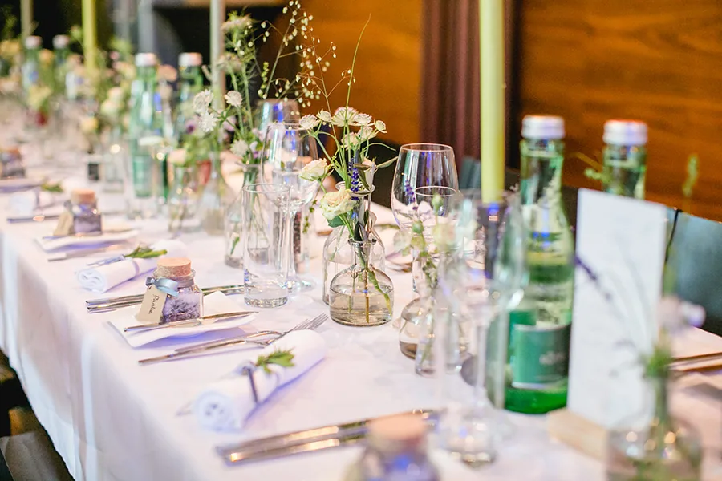

Mittag · 11:30–13:30
Essen · Trinken · Livekultur · Bahnhofstraße 24, Dornbirn


Wirtschaft Dornbirn · seit Generationen Gastgeber
Mittag, Dinner, Musik und Comedy – ein lebendiges Haus mitten in Dornbirn, geprägt von Emma & Eugen und weitergetragen von einer neuen Generation.
Direkter WegOhne KontoMittag & Abend
01 · Emma & Eugen · die Seele des Hauses
Die Großeltern des Besitzers stehen nicht als Dekoration im Header. Sie geben dem Haus Wärme, Herkunft und einen Wiedererkennungswert, den kein austauschbares Luxusmotiv ersetzen kann.
Originales weißes Emma-&-Eugen-Zeichen
Impressum
02 · Der gedeckte Tisch
Passende Tischgrößen, klare Bereiche und eine persönliche Bestätigung – unkompliziert vom ersten Wunsch bis zum gedeckten Tisch.
03 · Mittag in der Wirtschaft · 11:30–13:30
Mittags servieren wir wechselnde Menüs im Stil der Wirtschaft: frisch gekocht, saisonal und mit dem Geschmack, für den unser Haus steht.

04 · Dinner & Konzert / Comedy
Restaurant und Bühne werden zu einem Buchungsweg: Termin wählen, Ticketart verstehen, Menge prüfen – ohne den Abend aus dem Blick zu verlieren.
Mittag · 11:30–13:30

Abend · Dinner & Bühne

05 · Willkommen in der Wirtschaft
Bahnhofstraße 24 · 6850 Dornbirn
+43 (0)5572 20 540 · willkommen@wirtschaft-dornbirn.at
Hochzeiten · Geburtstage · Catering
Ob Hochzeit, runder Geburtstag oder Catering an eurem Wunschort: Schickt zuerst die Idee. Ort, Menü, Ablauf und Möglichkeiten klären wir anschließend persönlich und unverbindlich.
Keine Standardpakete und keine ungeprüften Kapazitätsversprechen – jedes Fest wird individuell bestätigt.
Ein Haus · drei klare Wege
Die Live-Fassung führt mit wenigen Entscheidungen zu den wichtigsten Zielen – ohne falsche Dringlichkeit und ohne austauschbare Werbeversprechen.